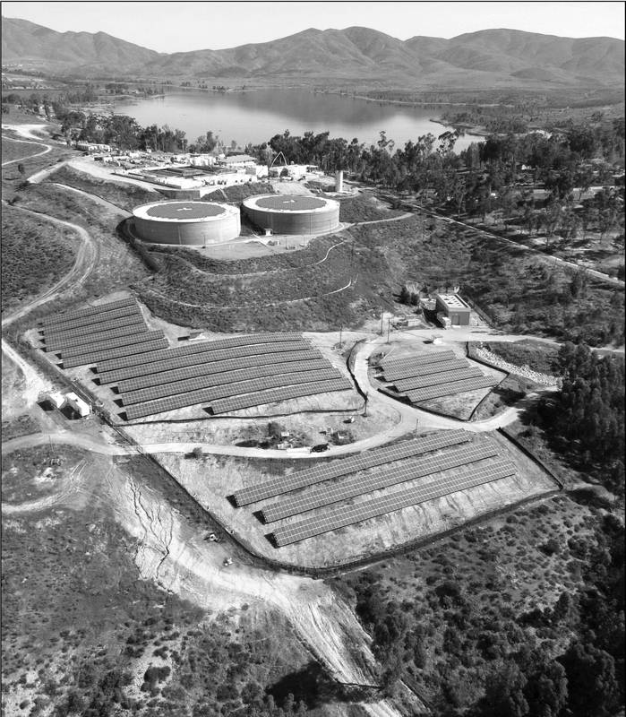

인천 수산·공촌 정수장에 태양광 5.7MW…인천도시공사·상수도사업본부 실시협약

민간 사업자 제이에이치에너지와 3자 협약…내년 상반기 시의회 의결 거쳐 본격 추진
인천 수산정수사업소와 공촌정수사업소의 시설 공간에 모두 5.7MW 규모의 태양광 발전설비가 들어선다. 인천도시공사(iH)는 인천시 상수도사업본부, 민간 사업자 ㈜제이에이치에너지와 정수장 태양광 발전사업 실시협약을 맺었다고 13일 밝혔다. iH와 상수도사업본부는 지난해 12월 기본협약을 맺었고, iH가 사업 전반을 총괄해 올해 9월 사업자 선정을 마쳤다. 사업은 내년 상반기 인천시의회 의결 등 절차를 거쳐 본격화된다. 새 부지를 개발하지 않고 이미 공공기관이 관리하는 기반시설을 발전 공간으로 쓰는 방식이다. iH는 2024년 인천시 에너지 전담기관으로 지정된 뒤 공영주차장 태양광 설치 등 지역 재생에너지 사업을 맡아 왔다.
시민에너지 관점
정수장·주차장 같은 공공시설은 시민의 세금으로 만든 땅이고, 5.7MW면 대략 2,000가구 안팎이 1년 동안 쓸 전기를 만든다. 새 땅을 깎지 않으니 경관·환경 갈등도 적다. 문제는 그 수익이 누구에게 가느냐다. 독일의 많은 도시공사가 시민 출자 협동조합에 공공 지붕을 열어 준 것처럼, 인천도 시의회 의결 전에 시민 출자 몫과 수익 환원 방식을 협약에 담아야 한다.
출처: 데일리안 2026-11-13 장현일 원문 보기
仁川の水山・公村浄水場に太陽光5.7MW…仁川都市公社と上水道事業本部が実施協定
民間事業者ジェイエイチエナジーとの3者協定…来年上半期の市議会議決を経て本格推進
韓国仁川市の水山浄水事業所と公村浄水事業所の施設空間に、合計5.7MW規模の太陽光発電設備が設置される。仁川都市公社（iH）は13日、仁川市上水道事業本部、民間事業者のジェイエイチエナジーと浄水場太陽光発電事業の実施協定を結んだと明らかにした。iHと上水道事業本部は昨年12月に基本協定を結び、iHが事業全体を統括して今年9月に事業者選定を終えた。事業は来年上半期に仁川市議会の議決などの手続きを経て本格化する。新たな用地を開発せず、すでに公共機関が管理する基盤施設を発電空間として使う方式だ。iHは2024年に仁川市のエネルギー専担機関に指定されて以降、公営駐車場への太陽光設置など地域の再生可能エネルギー事業を担ってきた。
市民エネルギーの視点
浄水場や駐車場のような公共施設は市民の税金で造られた土地であり、5.7MWあればおよそ2,000世帯前後が1年間に使う電気を生み出せる。新たな土地を削らないため、景観や環境をめぐる対立も少ない。問題はその収益が誰に渡るかだ。ドイツの多くの都市公社が市民出資の協同組合に公共の屋根を開放してきたように、仁川も市議会の議決前に市民出資の枠と収益還元の方法を協定に盛り込むべきだ。
出典: 데일리안 2026-11-13 장현일 原文を読む
仁川水山、公村净水厂将建5.7MW太阳能…仁川都市公社与上水道事业本部签署实施协议
与民间企业JH能源三方签约…明年上半年经市议会表决后全面推进
韩国仁川水山净水事业所和公村净水事业所的设施空间将建设总规模5.7MW的太阳能发电设施。仁川都市公社（iH）13日表示，已与仁川市上水道事业本部、民间企业JH能源签署净水厂太阳能发电项目实施协议。iH与上水道事业本部去年12月签署了基本协议，由iH统筹项目，今年9月完成了运营商遴选。项目将在明年上半年经仁川市议会表决等程序后全面推进。这一方式不开发新用地，而是把公共机构已在管理的基础设施用作发电空间。iH自2024年被指定为仁川市能源专责机构以来，一直负责公营停车场太阳能等地区可再生能源项目。
市民能源视角
净水厂、停车场等公共设施是用市民税金建成的土地，5.7MW每年大约可发出供2,000户左右使用的电力。由于不需要开发新土地，景观和环境冲突也较少。问题在于收益归谁。正如德国许多城市公营公司向市民出资合作社开放公共屋顶，仁川也应在市议会表决前，把市民出资份额和收益返还方式写进协议。
来源: 데일리안 2026-11-13 장현일 查看原文
Incheon to put 5.7 MW of solar on two water treatment plants under public-private agreement
City development corporation, waterworks headquarters and private firm JH Energy sign implementation deal; council vote expected in first half of next year
Solar power facilities totalling 5.7 MW will be installed on the grounds of the Susan and Gongchon water treatment plants in Incheon, South Korea. Incheon Urban Development Corporation (iH) said on Nov. 13 that it had signed an implementation agreement for the project with the city's waterworks headquarters and private developer JH Energy. iH and the waterworks headquarters signed a basic agreement last December, and iH, which oversees the project, finished selecting the developer in September. The project will move into full swing after procedures including a city council vote in the first half of next year. Rather than developing new land, it uses infrastructure already managed by public bodies as generating space. Since being designated the city's dedicated energy agency in 2024, iH has led local renewable projects such as solar on public parking lots.
Citizen Energy View
Water plants and parking lots are public land built with citizens' taxes, and 5.7 MW can supply roughly 2,000 households for a year. Because no new land is cleared, conflicts over landscape and environment are fewer. The real question is who receives the revenue. Just as many German municipal utilities have opened public roofs to citizen-funded cooperatives, Incheon should write a citizen investment share and a revenue-return formula into the agreement before the council vote.
Source: 데일리안 2026-11-13 장현일 Read the original